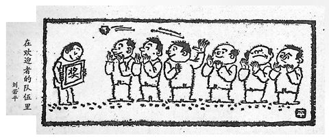
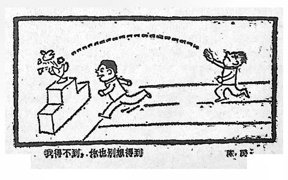

Envy of talent 9
-
 修“树”记 · Pruning the “Tree”
修“树”记 · Pruning the “Tree”
Zhang Naidong 张乃栋. Renshi (Personnel), 1985 no. 1 (whole no. 1), inside back cover. -
 背后议论图 · Talking Behind Backs
背后议论图 · Talking Behind Backs
Chen Kunlun 陈昆仑. Renshi (Personnel), 1985 no. 3 (whole no. 3), p. 44. -
 能人篇 · On Capable People
能人篇 · On Capable People
Unattributed. Renshi (Personnel), 1986 no. 6 (whole no. 9), p. 44. Reprinted from Fengci yu youmo (Satire and Humor). -
 灌溉除虫 · Watering and Removing Pests
灌溉除虫 · Watering and Removing Pests
Wang Letian 王乐天. Renshi (Personnel), 1986 no. 7 (whole no. 10), back cover. -

在欢迎者的队伍里 · Among the Welcoming Crowd
Liu Ruoping 刘若平. Renshi (Personnel), 1987 no. 1 (whole no. 16), p. 46. -

我得不到，你也别想得到 · If I Can't Have It, Neither Can You
Chen Ang 陈昂. Renshi (Personnel), 1987 no. 2 (whole no. 17), p. 45. -
 不许高出我！ · No One Stands Taller Than Me!
不许高出我！ · No One Stands Taller Than Me!
Wang Letian 王乐天. Renshi (Personnel), 1987 no. 7 (whole no. 22), inside back cover. -
 这小子想当劳模啦 · This Kid Wants to Be a Model Worker
这小子想当劳模啦 · This Kid Wants to Be a Model Worker
Unattributed. Renshi (Personnel), 1989 no. 11 (whole no. 50), p. 37. -
 孙猴儿不能提升（题图） · The Monkey Must Not Be Promoted (title drawing)
孙猴儿不能提升（题图） · The Monkey Must Not Be Promoted (title drawing)
Unattributed. Renshi (Personnel), 1990 no. 8 (whole no. 59), p. 40.